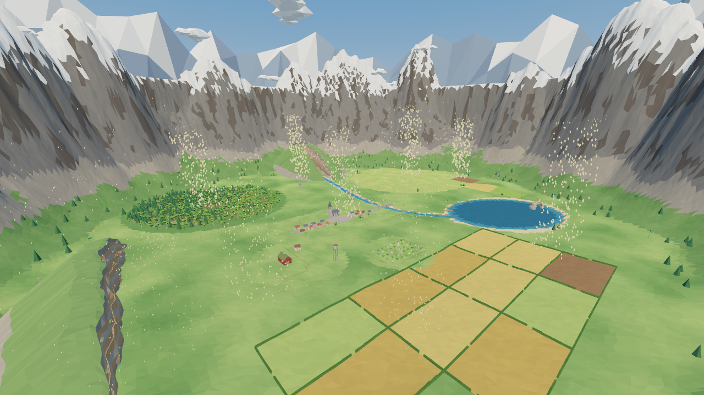
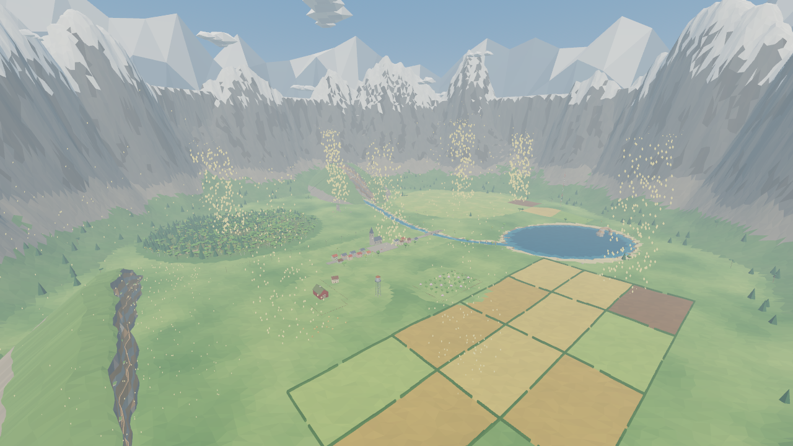

Godot 4.7.2 · controlled macOS rendering experiment · original source unchanged
The haze comes mainly from fog.
Godot enables pale blue exponential fog across the valley, with aerial perspective and a contribution to the sky. Disabling only fog restores distant surface color and contrast. Filmic tone mapping also changes the image; the separate controls below isolate its effect.


Original GodotFog off; Filmic retainedChanged viewOriginal
Identical seed, camera, sun, materials, shadows and draw frame. Five simultaneous native 1280 × 720 views, including an unchanged control. Both original controls match pixel-for-pixel. No color grading or image retouching.
What changes
| Setting | Original Godot | Fog-free preview |
|---|
| Distance fog | Exponential, density 0.00042 | Disabled |
| Fog color / sky | #c4d8e3; sky influence 0.2 | Fog contribution removed |
| Sun, materials and shadows | Original | Retained |
| Tone mapping | Filmic; exposure 1, white 6 | Retained by default |
In the valley overview, removing only fog increases mean image saturation from 0.178 to 0.281 and the spread of light/dark values from 0.066 to 0.122. Linear tone mapping brightens the image further and clips bright surfaces; fog-free Filmic preserves the original highlight handling.
The Unity comparison uses linear fog beginning at 270 m, while Godot’s fog accumulates immediately. Some of the clearer Unity appearance comes from those different atmospheric settings.
Four states, same frame
Separate playable Godot copy
The actual game also runs with fog disabled in unity/.godot-fog-investigation. Its alternate entry scene applies the environment change at runtime. The original game was not edited. All 2,596 protected source and asset files match their before/after hashes.